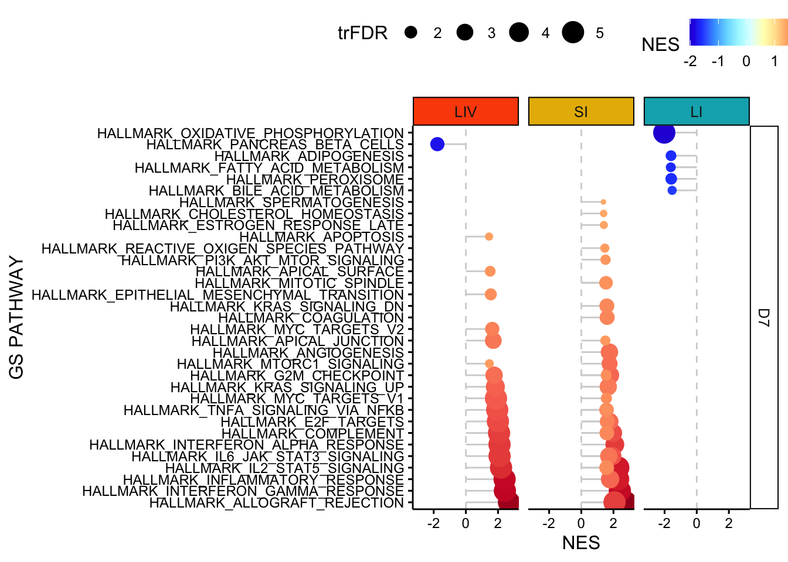

Chapter 11 RNA sequncing in mice (Figure 2): Anastasia Kousa
#renv::activate()
#renv::init()
#renv::install("renv")
#renv::status()
#renv::snapshot()
#renv::restore()#if (!requireNamespace("BiocManager", quietly = TRUE))
# install.packages("BiocManager")
#renv::install("bioc::BiocManager", force=T)
#renv::install("bioc::biomaRt", force=T)
#renv::install("bioc::edgeR", force=T)
#renv::install("bioc::EnhancedVolcano", force=T)
#renv::install("tibble", force=T)
#renv::install("ggpubr", force=T)
#renv::install("pheatmap", force=T)
#renv::install("dichromat", force=T)
#renv::install("grid", force=T)
#renv::install("patchwork", force=T)library(biomaRt)
library(edgeR)
library(EnhancedVolcano)## Loading required package: ggrepellibrary(tibble)
library(ggpubr)
library(pheatmap)
library(dichromat)
library(grid)
library(patchwork)
library(BiocManager)
library(cowplot)ensembl = useMart(biomart="ENSEMBL_MART_ENSEMBL", dataset="mmusculus_gene_ensembl", host = 'https://may2021.archive.ensembl.org', verbose = TRUE)## BioMartServer running BioMart version: 0.7
## Mart virtual schema: default
## Mart host: https://may2021.archive.ensembl.org:443/biomart/martservice## Checking attributes ...Attempting web service request:
## https://may2021.archive.ensembl.org:443/biomart/martservice?type=attributes&dataset=mmusculus_gene_ensembl&requestid=biomaRt&mart=ENSEMBL_MART_ENSEMBL&virtualSchema=default
## ok
## Checking filters ...Attempting web service request:
## https://may2021.archive.ensembl.org:443/biomart/martservice?type=filters&dataset=mmusculus_gene_ensembl&requestid=biomaRt&mart=ENSEMBL_MART_ENSEMBL&virtualSchema=default
## ok11.1 read in file
BMT_liv_int <- read.table( "/Volumes/Macintosh HD/Users/miltiado/Documents/BA/Anastasia/gsea_mice/BMT7_liver-intestine.txt", sep="\t", row.names=1, header=TRUE, as.is = TRUE, stringsAsFactors = TRUE)
nrow(BMT_liv_int) # needs to be 53379 for GRCm39 -Ensembl 104 May 2021 http://may2021.archive.ensembl.org 104-## [1] 53379colnames(BMT_liv_int) <- sub("\\.\\.", '', sub('_IGO.*', '', colnames(BMT_liv_int)))
rownames(BMT_liv_int) <- sub('\\..*', '', rownames(BMT_liv_int))11.2 link ensembl ids to gene names
geneNames <- getBM(filters= "ensembl_gene_id", attributes= c("ensembl_gene_id", "external_gene_name"), values=rownames(BMT_liv_int), mart=ensembl)
names <- geneNames[,1]
geneNames <- as.data.frame(geneNames)
rownames(geneNames) = names
merged <- merge(BMT_liv_int, geneNames, by="row.names", all=FALSE)
BMT_liv_int <- merged[,c(2:24,26)]
rownames(BMT_liv_int) <- merged[,1]11.3 Read in the count file: - D7
dgeBMT_liv_int <- DGEList(counts=BMT_liv_int[,6:23], genes = BMT_liv_int[,c(24,5)])
rownames(dgeBMT_liv_int$samples)## [1] "D7_SI_BM_005" "D7_LI_BM_002" "D7_SI_BMT_009" "D7_SI_BM_004"
## [5] "D7_SI_BMT_010" "D7_LI_BMT_010" "D7_LIV_BM_004" "D7_LIV_BM_002"
## [9] "D7_LI_BM_005" "D7_LI_BM_004" "D7_LIV_BMT_010" "D7_LI_BMT_006"
## [13] "D7_LIV_BM_005" "D7_LIV_BMT_009" "D7_LI_BMT_009" "D7_SI_BM_002"
## [17] "D7_LIV_BMT_006" "D7_SI_BMT_006"nrow(dgeBMT_liv_int) # 49915## [1] 49915# filter out lowly expressed genes
# count the number of genes that are not expressed in any of the samples - for now subselect only day 7 data: FALSE 32751 TRUE 17164
table(rowSums(dgeBMT_liv_int$counts==0)==length(rownames(dgeBMT_liv_int$samples))) # FALSE 30678 TRUE 19237##
## FALSE TRUE
## 30678 19237dgeBMT_liv_int$condition <- as.factor(sub( '.*_', '', sub("_0.*", '', rownames(dgeBMT_liv_int$samples))))
dgeBMT_liv_int$tissue <- as.factor(sub( '.*_', '', sub("_B.*", '', rownames(dgeBMT_liv_int$samples))))
dgeBMT_liv_int$groups <- as.factor(paste0(sub( '_0.*', '', sub('D.?.?_', '', rownames(dgeBMT_liv_int$samples))),"", dgeBMT_liv_int$day))
# filter out lowly expressed genes with filterByExpr function
keep.exprs <- filterByExpr(dgeBMT_liv_int, group=dgeBMT_liv_int$groups)
dgeBMT_liv_int <- dgeBMT_liv_int[keep.exprs,, keep.lib.sizes=FALSE]
# the filtered DGEList-object keeps the gene information for the retained genes correctly associated.
dim(dgeBMT_liv_int) # 17187 18## [1] 17187 18# calculate different library sizes
dgeBMT_liv_int <- calcNormFactors(dgeBMT_liv_int)
# create the design model that fits the data, Batch?
designBMT_liv_int <- model.matrix(~0 + dgeBMT_liv_int$groups)
colnames(designBMT_liv_int) <- sub("dgeBMT_liv_int\\$groups", "", colnames(designBMT_liv_int))
# run voom
v <- voom(dgeBMT_liv_int, designBMT_liv_int, plot=TRUE)
# fit linear model
fit <- lmFit(v, designBMT_liv_int)
cm <- makeContrasts( LI_BMT-LI_BM,
SI_BMT-SI_BM,
LIV_BMT-LIV_BM, levels=designBMT_liv_int)
# differential expression analysis
fit2 <- contrasts.fit(fit, cm)
fit2 <- eBayes(fit2)
fit2$groupMeans <- fit$coefficients
x=1
vs = c("LI_BMTvsBM", "SI_BMTvsBM", "LIV_BMTvsBM")
for (x in 1:3) {
BMT_liv_intTable <- topTable(fit2, coef = x, genelist =data.frame(fit2$genes,fit2$groupMeans), number = Inf, adjust="BH")
# write.table(BMT_liv_intTable, paste0("~/results/v2/", vs[x], "_only_D7.txt"), sep="\t", col.names=NA)
# save as .rnk for running pathway enrichment analysis with GSEA
topTable_to_rank <- BMT_liv_intTable
# just using logFC as the ranking parameter - or now subselect only day 7 data: c(1,15)
rankfile = na.omit(topTable_to_rank[,c(1,9)])
rankfile_sorted = rankfile[order(rankfile$logFC, decreasing = TRUE),]
#ss write.table(rankfile_sorted, paste0("/results/v2/", vs[x], "_only_D7.rnk"), sep = '\t', row.names = FALSE, quote = FALSE)
}11.4 plot GSEA results facet by organ - Hallmarks - D7
setwd("/Users/miltiado/Documents/BA/Anastasia/gsea_mice/")
gsea_result_files <- list.files(recursive = TRUE, pattern = "^gsea_report(.*)tsv$")
# within the for loop I change the order of the organs
organ_annotation = c("LIV", "LIV", "SI", "SI", "LI", "LI")
day_annotation = c("D7", "D7", "D7", "D7", "D7", "D7")
i=1
all_gsea_results = tibble("GS PATHWAY"=factor(), "GS DETAILS"=integer(), "SIZE"=double(), "ES"=double(), "NES"=double(), "NOM p-val"=double(), "FDR q-val"=double(), "FWER p-val"=double(), "RANK"=integer(), "LEADING EDGE"=factor(), "GROUP"=factor(), "ORGAN" = factor(), "DAY" = factor())
for (path in gsea_result_files[c(3:4, 5:6, 1:2)]){
gsea_results = tibble(read.table(path, sep="\t", row.names = 1, skip = 1))
colnames(gsea_results) = c("GS PATHWAY", "GS DETAILS", "SIZE", "ES", "NES", "NOM p-val", "FDR q-val", "FWER p-val", "RANK", "LEADING EDGE", "GROUP")
gsea_results$GROUP = rep(as.factor(substring(path, 64,76)), nrow(gsea_results))
gsea_results$ORGAN = rep(as.factor(organ_annotation[i]), nrow(gsea_results))
gsea_results$DAY = rep(as.factor(day_annotation[i]), nrow(gsea_results))
all_gsea_results = rbind(all_gsea_results, gsea_results)
i=i+1
}
all_gsea_results = all_gsea_results[all_gsea_results$NES!="---",]
all_gsea_results$NES = as.double(all_gsea_results$NES)
all_gsea_results$`-10log(FDR q-val)` = -log(all_gsea_results$`FDR q-val`+0.00001,10)
all_gsea_results$trFDR = all_gsea_results$`-10log(FDR q-val)`
p <- ggdotchart(all_gsea_results[(all_gsea_results$`FDR q-val`<=0.05) ,], 'GS PATHWAY', 'NES', shape=19, sorting = "ascending",
add = "segments",color= 'NES', rotate=TRUE, dot.size='trFDR', ggtheme = theme_pubr()) +facet_grid(DAY~ORGAN) +
scale_colour_gradientn(colours = dichromat::colorschemes$DarkRedtoBlue.12) +
geom_hline(yintercept = 0, linetype = 2, color = "lightgray") + ylim(-3,3) + font("xy.text", size=9)
# workaround - add the right color to the background strip
p2e <- ggplot_gtable(ggplot_build(p))
strip_both <- which(grepl('strip-', p2e$layout$name))
fills <- c("#FC4E07", "#E7B800", "#00AFBB")
k <- 1
for (i in strip_both) {
j <- which(grepl('rect', p2e$grobs[[i]]$grobs[[1]]$childrenOrder))
p2e$grobs[[i]]$grobs[[1]]$children[[j]]$gp$fill <- fills[k]
k <- k+1
}
grid.draw(p2e)
bile_acid_LIV <- c('Serpina6', 'Cyp7b1', 'Slco1a4', 'Acsl5', 'Cat', 'Abcg8', 'Fads2', 'Crot', 'Ttr', 'Bbox1', 'Fads1', 'Paox', 'Agxt', 'Idh1', 'Ephx2', 'Slc23a2', 'Sult1b1', 'Nr0b2', 'Abcd3', 'Npc1', 'Lonp2', 'Idh2', 'Abcd2', 'Aldh1a1', 'Hsd17b11', 'Pex7', 'Sod1', 'Pecr', 'Nr3c2', 'Hsd17b6', 'Slc22a18', 'Isoc1', 'Nudt12', 'Aldh9a1')
p2f <- pheatmap(v$E[v$genes$external_gene_name %in% bile_acid_LIV,c(7,8, 11, 13,14, 17)], scale = "row",
cellwidth = 15, cellheight = 9, color = colorschemes$DarkRedtoBlue.18,
labels_row = v[v$genes$external_gene_name %in% bile_acid_LIV,]$genes$external_gene_name,
fontsize = 9, cluster_cols = TRUE, cluster_rows = FALSE)
#change colors for the GSEA plots
ggdraw(grid.draw(p2e))